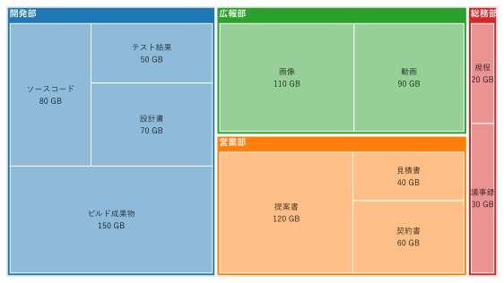
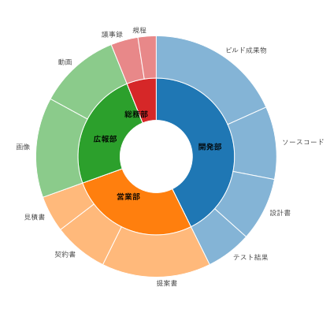
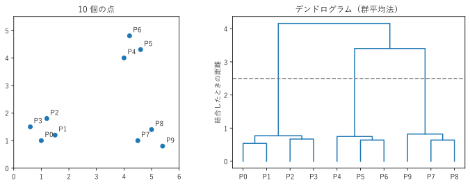

第 11 章 階層構造を見る
ディレクトリ構成、組織図、クラスの継承関係のように、親と子の関係を持つ構造を階層構造という。グラフ理論では、閉路を持たず、すべてのノードがつながった無向グラフを木という。階層構造は、根（最上位のノード）を持つ木として表せる。
この章では、階層構造を描く木構造図、入れ子のツリーマップ、サンバースト図と、階層的にまとめた結果を描くデンドログラムを扱う。
木構造図
木構造図は、親を上（または左）に、子を下（または右）に置き、親子をエッジで結んだノードリンク図である。Graphviz の dot エンジンは、ノードを層に分けて配置するため、木構造図に向いている。
図 45 は、あるプロジェクトのディレクトリ構成である。
図 45 プロジェクトのディレクトリ構成の木構造図
1// 木構造: プロジェクトのディレクトリ構成
2// フォルダーを親、中のファイルやフォルダーを子として、上から下へ描く
3digraph directory {
4 node [shape=box, fontname="Yu Gothic", style=filled, fillcolor=white];
5 edge [arrowhead=none];
6
7 // フォルダーは色を付けて区別する
8 project [label="project/", fillcolor="#f6e3b4"];
9 src [label="src/", fillcolor="#f6e3b4"];
10 tests [label="tests/", fillcolor="#f6e3b4"];
11 docs [label="docs/", fillcolor="#f6e3b4"];
12 app [label="app/", fillcolor="#f6e3b4"];
13
14 project -> {src tests docs readme};
15 readme [label="README.md"];
16 src -> {app main};
17 main [label="main.py"];
18 app -> {models views};
19 models [label="models.py"];
20 views [label="views.py"];
21 tests -> {test_models test_views};
22 test_models [label="test_models.py"];
23 test_views [label="test_views.py"];
24 docs -> index;
25 index [label="index.rst"];
26}
フォルダーとファイルを色で区別している。木構造図では、同じ深さ（層）のノードが同じ高さに並ぶので、階層の深さが一目で分かる。この例では、models.py と views.py が最も深い 3 段目にある。
親子関係のエッジは向きが明らかなので、矢印を省略することが多い（arrowhead=none）。一方、クラスの継承関係のように向きに意味がある場合は、矢印で示す。図 46 は、Python の組み込み例外のクラス階層の一部である。
図 46 Python の組み込み例外のクラス階層（一部）
1// 木構造: Python の組み込み例外のクラス階層（一部）
2// 子クラスから親クラスへ矢印を引く（UML のクラス図の継承の向き）
3digraph exceptions {
4 rankdir=BT;
5 node [shape=box, fontname="Consolas", style=filled, fillcolor="#dbe9f6"];
6 edge [arrowhead=empty];
7
8 SystemExit -> BaseException;
9 KeyboardInterrupt -> BaseException;
10 Exception -> BaseException;
11 ArithmeticError -> Exception;
12 LookupError -> Exception;
13 OSError -> Exception;
14 ValueError -> Exception;
15 ZeroDivisionError -> ArithmeticError;
16 IndexError -> LookupError;
17 KeyError -> LookupError;
18 FileNotFoundError -> OSError;
19 PermissionError -> OSError;
20 UnicodeError -> ValueError;
21}
UML のクラス図にならい、子クラスから親クラスへ、先端が白抜きの三角形の矢印を引いている。rankdir=BT``（下から上へ）を指定して、親クラスが上に来るようにしている。この図から、例えば ``except LookupError: と書くと IndexError と KeyError の両方を捕捉できることが分かる。
木構造図は、ノードが数十程度までなら見やすい。ノードが多い場合は、横に広がりすぎるので、rankdir=LR で左から右へ配置するか、深い階層を折りたたんで描く。
入れ子のツリーマップ
第 6 章のツリーマップは、1 段の構成比を表した。長方形の中をさらに子の長方形で分割すれば、階層構造と各ノードの量を同時に表せる [Shneiderman1992]。図 47 は、架空のファイルサーバーの使用容量を、部署とフォルダーの 2 段で描いたものである。

図 47 使用容量の入れ子のツリーマップ。濃い色の枠が部署、薄い色の長方形がフォルダーである
開発部が全体の約 4 割を使っていること、その中ではビルド成果物が最も大きいことが分かる。木構造図と違い、ツリーマップは各ノードの量（面積）を表せる。一方、階層が 3 段以上になると、どの長方形がどの親に属するかが分かりにくくなる。各段の境界を、枠線の太さや余白で区別するとよい。
28def create_figure() -> Figure:
29 """2 段の入れ子のツリーマップを描く."""
30 totals = [float(sum(children.values())) for children in TREE.values()]
31 outer_rects = treemap.squarify(totals, (0.0, 0.0, 16.0, 9.0))
32 fig, ax = plt.subplots(figsize=(8, 4.5))
33 for index, ((department, children), outer) in enumerate(
34 zip(TREE.items(), outer_rects)):
35 color = f"C{index}"
36 # フォルダーは、部署の色を白に近づけた薄い色で塗る
37 red, green, blue = to_rgb(color)
38 light_color = to_hex((1 - 0.5 * (1 - red), 1 - 0.5 * (1 - green),
39 1 - 0.5 * (1 - blue)))
40 treemap.draw_rect(ax, outer, color, linewidth=3)
41 x, y, width, height = outer
42 ax.text(x + 0.1, y + height - 0.08, department, va="top",
43 color="white", fontweight="bold")
44 # 部署名の帯と余白を除いた領域を、フォルダーで分割する
45 inner = (x + PADDING, y + PADDING, width - 2 * PADDING,
46 height - 2 * PADDING - HEADER)
47 values = [float(value) for value in children.values()]
48 for (name, value), rect in zip(children.items(),
49 treemap.squarify(values, inner)):
50 treemap.draw_rect(ax, rect, light_color, f"{name}\n{value} GB")
51 ax.set_xlim(0, 16)
52 ax.set_ylim(0, 9)
53 ax.set_axis_off()
54 fig.tight_layout()
55 return fig
まず部署の合計で外側の長方形を分割し、次に各部署の長方形から、部署名の帯と余白を除いた領域を、フォルダーの値で分割している。分割には、第 6 章の treemap.squarify() を使う。
サンプルの全体：ch11_treemap_nested.py、treemap.py
サンバースト図
サンバースト図は、階層構造を同心円で表すグラフである。根を中心に置き、1 段目を内側の輪、2 段目をその外側の輪に配置する。各ノードの量は、扇形の角度で表す（図 48）。


図 48 使用容量のサンバースト図。内側の輪が部署、外側の輪がフォルダーである
子の扇形は、必ず親の扇形の外側の範囲に収まるので、どの子がどの親に属するかは、入れ子のツリーマップより分かりやすい。一方、量は角度で表すため、円グラフと同じく正確な比較には向かない。また、外側の輪ほど扇形が細くなり、ラベルを置く場所が足りなくなる。
19def create_figure() -> Figure:
20 """部署とフォルダーの 2 段のサンバースト図を描く."""
21 departments = list(TREE)
22 totals = [sum(children.values()) for children in TREE.values()]
23 names = [name for children in TREE.values() for name in children]
24 values = [value for children in TREE.values()
25 for value in children.values()]
26 colors = [f"C{index}" for index, children in enumerate(TREE.values())
27 for _ in children]
28
29 fig, ax = plt.subplots(figsize=(6, 6))
30 # 内側の輪: 部署
31 ax.pie(totals, radius=1 - RING_WIDTH, labels=departments,
32 labeldistance=0.55, colors=[f"C{i}" for i in range(len(TREE))],
33 wedgeprops={"width": RING_WIDTH, "edgecolor": "white"},
34 textprops={"fontweight": "bold"}, startangle=90,
35 counterclock=False)
36 # 外側の輪: フォルダー（親の部署と同じ色を薄くして塗る）
37 ax.pie(values, radius=1, labels=names, labeldistance=1.05, colors=colors,
38 wedgeprops={"width": RING_WIDTH, "edgecolor": "white",
39 "alpha": 0.55},
40 textprops={"fontsize": 9}, startangle=90, counterclock=False)
41 ax.set_aspect("equal")
42 fig.tight_layout()
43 return fig
matplotlib には専用の関数がないため、pie() の wedgeprops で幅（width）を指定した輪を、半径を変えて 2 つ重ねている。外側の輪の値を部署の順に並べることで、子の扇形が親の扇形の外側にそろう。
サンプルの全体：ch11_sunburst.py
デンドログラム
デンドログラム（樹形図）は、似たものから順にまとめていく階層クラスタリングの結果を描く図である。生物の系統樹や、顧客の分類、文書の分類などに使う。
階層クラスタリングは、次の手順で行う。
最初は、各データ点を 1 つのクラスター（まとまり）とする。
最も距離の近い 2 つのクラスターを結合して、1 つのクラスターにする。
クラスターが 1 つになるまで、2 を繰り返す。
クラスター間の距離の定義にはいくつかの方法がある。サンプルでは、2 つのクラスターに属する点のすべての組の距離の平均を使う群平均法を使っている。

図 49 平面上の 10 個の点（左）と、群平均法によるデンドログラム（右）
図 49 の右の図では、横に元のデータ点を並べ、結合したクラスターを「コ」の字を下に向けた線でつないでいる。線の高さは、結合したときのクラスター間の距離である。
低い位置で結合した点どうしは、互いに近い。P0、P1、P2、P3 は距離 1 未満で 1 つにまとまる。
破線の高さ（2.5）で横に切ると、線が 3 本切れる。つまり、データは 3 つのクラスター（P0 から P3、P4 から P6、P7 から P9）に分かれる。切る高さを変えれば、クラスターの数を調整できる。
最後の結合（高さ約 4.2）は、左下のまとまりとそれ以外を結合している。右上と右下のまとまりの方が、左下のまとまりよりも互いに近いことが分かる。
29def average_linkage(points: np.ndarray) -> list[Merge]:
30 """群平均法でクラスターを 1 つになるまで結合し、結合の記録を返す."""
31 distances = np.linalg.norm(points[:, np.newaxis] - points, axis=2)
32 members = {i: [i] for i in range(len(points))}
33 merges: list[Merge] = []
34 while len(members) > 1:
35 ids = list(members)
36 best: Merge | None = None
37 for i, a in enumerate(ids):
38 for b in ids[i + 1:]:
39 # クラスター間の距離: すべての点の組の距離の平均
40 d = float(distances[np.ix_(members[a], members[b])].mean())
41 if best is None or d < best[2]:
42 best = (a, b, d)
43 assert best is not None
44 a, b, d = best
45 merges.append(best)
46 members[len(points) + len(merges) - 1] = (members.pop(a)
47 + members.pop(b))
48 return merges
average_linkage() は、結合のたびにすべてのクラスターの組の距離を計算し、最小の組を結合する。結合の記録（結合した 2 つのクラスターと距離）を順に返す。
51def draw_dendrogram(ax: Axes, merges: list[Merge], labels: list[str]) -> None:
52 """結合の記録からデンドログラムを描く."""
53 n = len(labels)
54 children = {n + k: (a, b) for k, (a, b, _) in enumerate(merges)}
55
56 # 線が交差しないよう、木を左からたどった順に葉（元の点）を並べる
57 order: list[int] = []
58
59 def visit(node: int) -> None:
60 if node < n:
61 order.append(node)
62 return
63 left, right = children[node]
64 visit(left)
65 visit(right)
66
67 visit(n + len(merges) - 1)
68 x = {leaf: float(position) for position, leaf in enumerate(order)}
69 y = {leaf: 0.0 for leaf in order}
70 # 結合の順に、2 つの子を「コ」の字を下に向けた線でつなぐ
71 for k, (a, b, height) in enumerate(merges):
72 ax.plot([x[a], x[a], x[b], x[b]], [y[a], height, height, y[b]],
73 color="C0")
74 x[n + k] = (x[a] + x[b]) / 2
75 y[n + k] = height
76 ax.set_xticks(range(n), [labels[leaf] for leaf in order])
draw_dendrogram() は、まず木を左からたどってデータ点の並び順を決める。この順に並べると、線が交差しない。次に、結合の記録の順に、2 つの子を線でつなぎ、子の中点を親の位置とする。実務では、SciPy の scipy.cluster.hierarchy モジュールの linkage() と dendrogram() を使うことが多い。
サンプルの全体：ch11_dendrogram.py
まとめ
階層構造の親子関係は、dot エンジンによる木構造図で描く。向きに意味がある場合は矢印を付ける。
各ノードの量も示したい場合は、入れ子のツリーマップやサンバースト図を使う。
階層クラスタリングの結果は、デンドログラムで描く。切る高さによってクラスターの数が決まる。